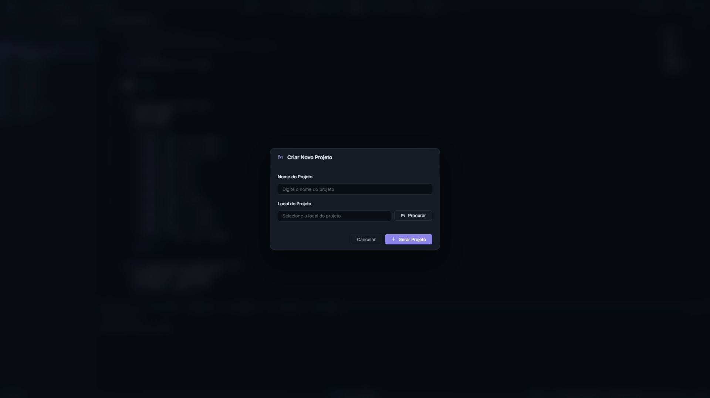

Primeiro projeto: um filtro de média móvel¶
Este é o tutorial condutor do manual. Ao final dele você terá criado um projeto, gerado um processador SAPHO sob medida, escrito um algoritmo em C±, compilado até Verilog, simulado o circuito e lido o resultado na forma de onda. Tudo dentro da AURORA, sem tocar em uma linha de comando.
Reserve cerca de trinta minutos. Se algo não sair como o descrito, cada seção termina com o que conferir.
O que vamos construir
Um filtro de média móvel de quatro amostras. Ele lê um valor por uma porta de entrada, guarda as quatro últimas leituras, soma e devolve a média por uma porta de saída. É o filtro mais simples que existe em processamento de sinais, e serve para suavizar um sinal ruidoso.
Escolhemos esse exemplo porque ele exercita, em vinte linhas, tudo o que um projeto SAPHO tem: entrada e saída, um vetor na memória de dados, aritmética e um laço infinito.
Passo 1: criar o projeto¶
Tudo no SAPHO acontece dentro de um projeto, que é uma pasta no disco governada por um arquivo .spf (SAPHO Project File).
Clique em Novo Projeto, na barra superior ou na tela de boas-vindas.
Em Nome do Projeto, digite
MeuFiltro.Clique em Procurar e escolha uma pasta na qual você tenha permissão de escrita.
Clique em Gerar Projeto.
{kind=link}

Figura 18 O formulário de criação pede apenas nome e local. O campo de local é somente leitura e é preenchido pelo botão Procurar.¶
Aviso
O nome aceita apenas letras, números, sublinhado e hífen. Sem espaços, sem acentos e sem símbolos. Se algum campo violar a regra, um diálogo explica o problema antes de qualquer coisa ser criada no disco.
Confira: a árvore lateral deve mostrar MeuFiltro, praticamente vazia. No disco surgiu <local>/MeuFiltro/MeuFiltro.spf.
Passo 2: criar o processador¶
Um projeto recém-criado ainda não tem processadores. Vamos criar o nosso.
Clique em Hub de Processadores, na barra superior.
Em Nome do Processador, digite
media_movel.Preencha os parâmetros conforme a tabela abaixo.
Clique em Gerar Processador.
Campo |
Valor |
Por que este valor |
|---|---|---|
Nome do Processador |
|
Vira o nome da pasta, do arquivo e da diretiva |
Total de Bits |
|
Largura da palavra; 16 bits bastam para sinais de instrumentação |
Bits da Mantissa |
|
Precisão do ponto flutuante, cerca de três dígitos decimais |
Bits do Expoente |
|
Faixa do ponto flutuante |
Ganho |
|
Só importa se o programa usar |
Pilha de Instruções |
|
Profundidade de chamadas de função aninhadas |
Pilha de Dados |
|
Complexidade das expressões |
Portas de Entrada |
|
Uma porta para receber as amostras |
Portas de Saída |
|
Uma porta para publicar a média |

Figura 19 O Hub concentra os parâmetros de arquitetura. A validação acontece enquanto você digita, e Gerar Processador só habilita quando tudo está consistente.¶
Importante
A regra que mais reprova o formulário O total de bits deve ser exatamente a soma da mantissa, do expoente e do bit de sinal. Aqui, \(16 = 10 + 5 + 1\). Se o botão não habilitar, confira essa igualdade primeiro; ela é uma exigência estrutural do hardware de ponto flutuante, explicada em O ponto flutuante do SAPHO.
Confira: a árvore deve mostrar o processador media_movel com três subpastas.
MeuFiltro/
├── MeuFiltro.spf
└── media_movel/
├── Software/media_movel.cmm o seu código
├── Hardware/ vazia por enquanto
└── Simulation/ vazia por enquanto
O arquivo media_movel.cmm já nasce com o cabeçalho preenchido pelo formulário e um main() vazio à sua espera.
Passo 3: escrever o algoritmo¶
Abra Software/media_movel.cmm com um clique duplo na árvore. Substitua o corpo do arquivo por este programa:
1#PRNAME media_movel
2#NUBITS 16
3#NDSTAC 4
4#SDEPTH 2
5#NUIOIN 1
6#NUIOOU 1
7#NBMANT 10
8#NBEXPO 5
9#NUGAIN 128
10
11void main()
12{
13 int x[4]; // historico das ultimas 4 amostras
14 int soma;
15
16 while (1)
17 {
18 x[3] = x[2]; // desloca o historico
19 x[2] = x[1];
20 x[1] = x[0];
21 x[0] = in(0); // le nova amostra da porta 0
22
23 soma = x[0] + x[1] + x[2] + x[3];
24 out(0, soma >> 2); // media = soma/4, sem usar divisor
25 }
26}
Salve com Ctrl+S. O ponto na aba deve desaparecer.
Lendo o programa linha a linha¶
As nove primeiras linhas são diretivas, e não código executável: elas configuram o hardware que será gerado. Foi o formulário do passo anterior que as escreveu, e a partir de agora o arquivo é a fonte da verdade. Editar uma diretiva muda o processador na próxima compilação. A lista completa está em Referência de diretivas.
O while (1) não é um descuido. O programa modela um circuito, e circuitos não terminam: eles processam amostras para sempre. Essa é a forma canônica de um programa SAPHO.
Duas escolhas do corpo do laço merecem atenção, porque são idiomáticas e explicam muito sobre a plataforma:
- O histórico é deslocado à mão
Não há alocação dinâmica nem ponteiros. O vetor
xocupa quatro endereços fixos da memória de dados, e deslocar o histórico é copiar valor a valor. Em troca, cada uma dessas quatro posições aparece pelo nome na forma de onda, o que você verá no passo 6.- A divisão por quatro é um deslocamento de bits
soma >> 2produz o mesmo resultado desoma / 4, mas com uma diferença decisiva: usar/instanciaria um divisor inteiro no circuito, um dos blocos mais caros da unidade lógica e aritmética. O deslocamento é quase de graça. Esse é o princípio de pagar apenas pelo que se usa, detalhado em Recursos avançados.
Ver também
A linguagem inteira está documentada em A linguagem C±: fundamentos. Se você já conhece C, a leitura mais útil é a das ausências: não existem --, +=, operador ternário, ponteiros nem struct.
Passo 4: compilar¶
Com o .cmm salvo e em foco no editor, clique em Compilar C±.
Três compiladores rodam em sequência, e você acompanha os dois primeiros terminais:
flowchart LR
A[".cmm"] -->|cmmcomp| B[".asm<br><small>assembly simbólico</small>"]
B -->|appcomp| C["endereços<br>resolvidos"]
C -->|asmcomp| D[".v + .mif + testbench"]
O terminal TCMM mostra a tradução para assembly. O terminal TASM mostra a montagem, a geração do Verilog e, o mais interessante, os avisos de recurso instanciado: cada bloco de hardware que o seu programa acabou de ligar no circuito.
Confira: a pasta Hardware deve ter ganhado três arquivos.
media_movel/
├── Software/
│ ├── media_movel.cmm o seu fonte
│ ├── media_movel.asm assembly gerado
│ └── pc_media_movel_mem.txt tabela PC -> linha, usada nas ondas
├── Hardware/
│ ├── media_movel.v o processador em Verilog
│ ├── media_movel_inst.mif imagem da memória de programa
│ └── media_movel_data.mif imagem da memória de dados
└── Simulation/
└── media_movel_tb.v testbench gerado
Esse .v e esses .mif são exatamente o que se leva ao Quartus ou ao Vivado na hora de gravar o FPGA de verdade.
Aviso
A existência de um arquivo em Hardware não prova que a compilação atual passou: ele pode ser de uma tentativa anterior. Confirme sempre nos terminais que as duas etapas terminaram sem erro.
Se a compilação falhou, vá à primeira mensagem de erro, não à última. O terminal transforma a referência de linha em um link: o clique leva o editor ao ponto exato. As mensagens do compilador são explicadas em Recursos avançados.
Passo 5: preparar o estímulo e simular¶
O testbench gerado alimenta cada porta de entrada com o conteúdo de um arquivo de texto, um valor por linha, e grava cada porta de saída em outro. Vamos criar o estímulo.
Na visão Pastas da árvore, clique com o botão direito em
media_movel/Simulatione escolha Novo Arquivo….Nomeie o arquivo
input_0.txt, correspondente à porta de entrada 0.Escreva um degrau: alguns zeros seguidos de um valor alto, para ver o filtro suavizar a transição.
0
0
0
0
100
100
100
100
100
100
100
100
Confirme, na barra superior, que o simulador selecionado é o Icarus Verilog e o visualizador é o GTKWave.
Clique em Analisar Verilog (forma de onda).
A AURORA compila o que for preciso, executa a simulação e abre o visualizador. Acompanhe o progresso no terminal TWAVE.
Se a simulação terminar antes de o resultado aparecer
A causa quase sempre é o número de ciclos. Clique na engrenagem ao lado do botão de compilar e aumente o valor de ciclos, que por padrão é 2000. O mesmo painel ajusta a frequência de clock e mostra o tempo simulado estimado.
Passo 6: ler a forma de onda¶
O visualizador abre com um layout já curado pela AURORA, e essa curadoria é uma das coisas mais úteis da plataforma. Abrir um despejo bruto em um visualizador qualquer significa começar do zero, sem nenhum sinal selecionado e tudo em binário. Aqui, os sinais já vêm agrupados, nomeados e coloridos.

Figura 20 O modal Configuração de ondas escolhe quais sinais a simulação grava. Comece por clk, rst, as portas e o sinal de término; expanda o processador só quando precisar investigar por dentro.¶
Procure, na janela do visualizador:
as variáveis
x[0]ax[3], que mostram o histórico deslizando a cada amostra;a variável
soma, que sobe em degraus de 100 conforme o histórico se preenche;a porta de saída, na qual o degrau aparece suavizado em quatro passos, exatamente o comportamento esperado de uma média móvel de quatro amostras;
as trilhas de texto que exibem, a cada ciclo de clock, a instrução assembly executada e a linha do seu C± correspondente.
Essa última trilha merece um instante de atenção: é o seu programa rodando dentro do hardware, linha a linha, em sincronia com o clock. É o vínculo mais direto entre o código que você escreveu e o circuito que ele virou.
Os valores de saída também ficam gravados em Simulation/output_0.txt, prontos para conferência em uma planilha ou em um script.
Passo 7: ver o circuito por dentro¶
Falta olhar o que o seu programa virou em termos de estrutura.
Na árvore, clique com o botão direito em
Hardware/media_movel.ve escolha Definir como Top Level.Clique em Abrir PRISM.
O PRISM sintetiza o projeto com o Yosys e desenha o circuito como um diagrama navegável. Um clique em um módulo entra nele; um duplo clique em uma célula abre o código-fonte correspondente no editor.

Figura 21 No PRISM, o processador SAPHO aparece com símbolo próprio ao lado dos demais blocos. Os blocos internos, como a unidade lógica e aritmética e as memórias, também têm desenho dedicado.¶
Dica
O experimento que ensina mais rápido
Volte ao .cmm, troque out(0, soma >> 2); por out(0, soma / 4);, recompile e clique em Recompile no PRISM. Um divisor inteiro aparece no diagrama, e o terminal TASM anuncia o novo bloco instanciado. Desfaça a mudança e ele some.
Esse ida e volta torna palpável a relação entre uma construção da linguagem e o custo em hardware, que é o assunto central de Recursos avançados.
O que você aprendeu¶
Um projeto é uma pasta com um
.spf, e um processador é uma pasta comSoftware,HardwareeSimulation.As diretivas no topo do
.cmmdefinem o hardware; o corpo define o comportamento.Compilar produz Verilog, imagens de memória e um testbench, nessa ordem, por três compiladores encadeados.
A simulação lê estímulos de
input_<i>.txte grava resultados emoutput_<i>.txt.A forma de onda mostra as suas variáveis pelo nome e a linha do seu código a cada ciclo.
Escolhas de linguagem têm custo em hardware, e o PRISM mostra esse custo.
Para onde ir agora¶
Tipos, complexos, notação de Dirac e a biblioteca completa.
Como o acumulador, o pipeline e as memórias executam o seu programa.
Trocar o testbench Verilog por um em cocotb, com NumPy na verificação.
Se, em vez de gerar um processador, o seu objetivo é escrever Verilog diretamente, o caminho é outro e está em Fluxo completo para projetos Verilog.